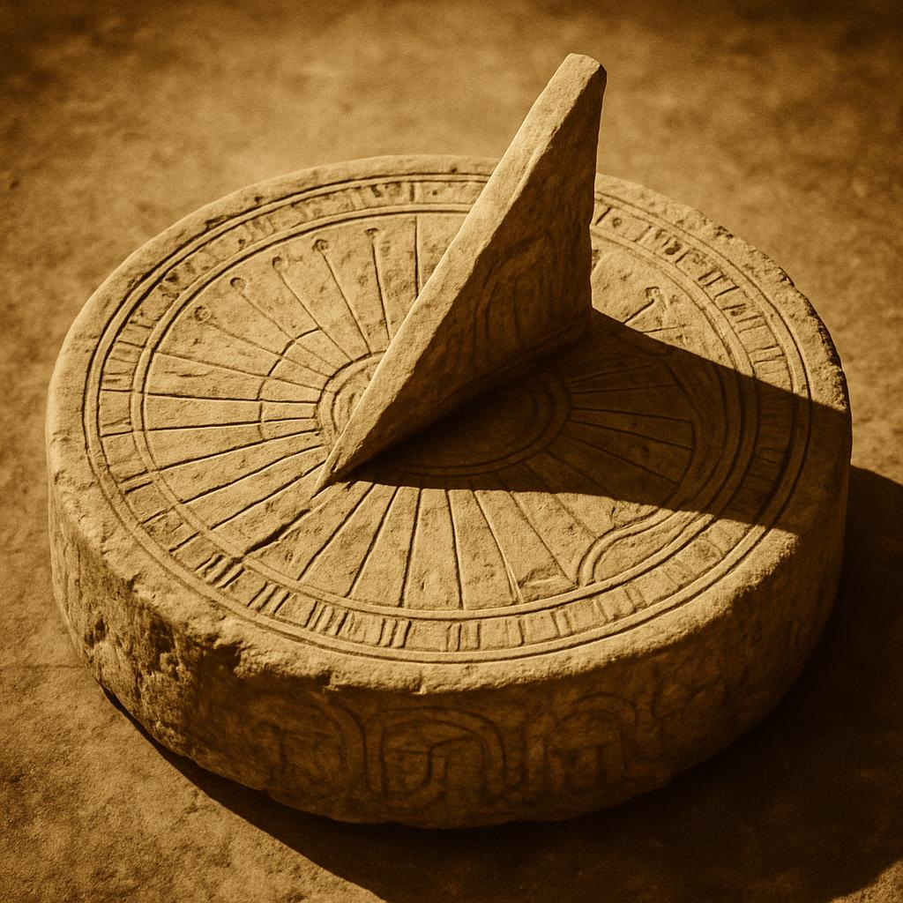
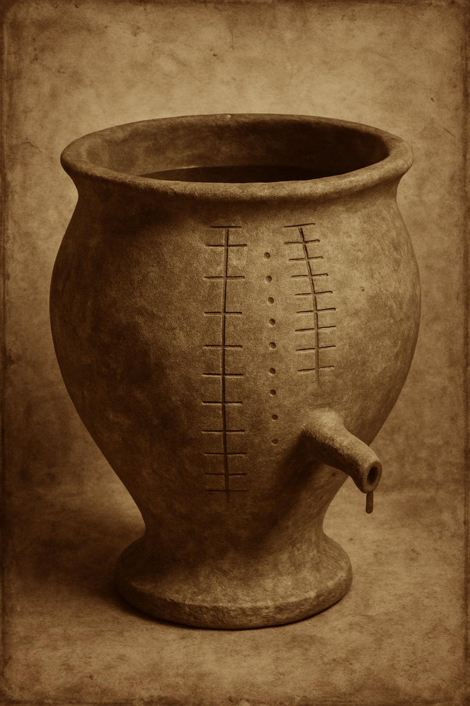
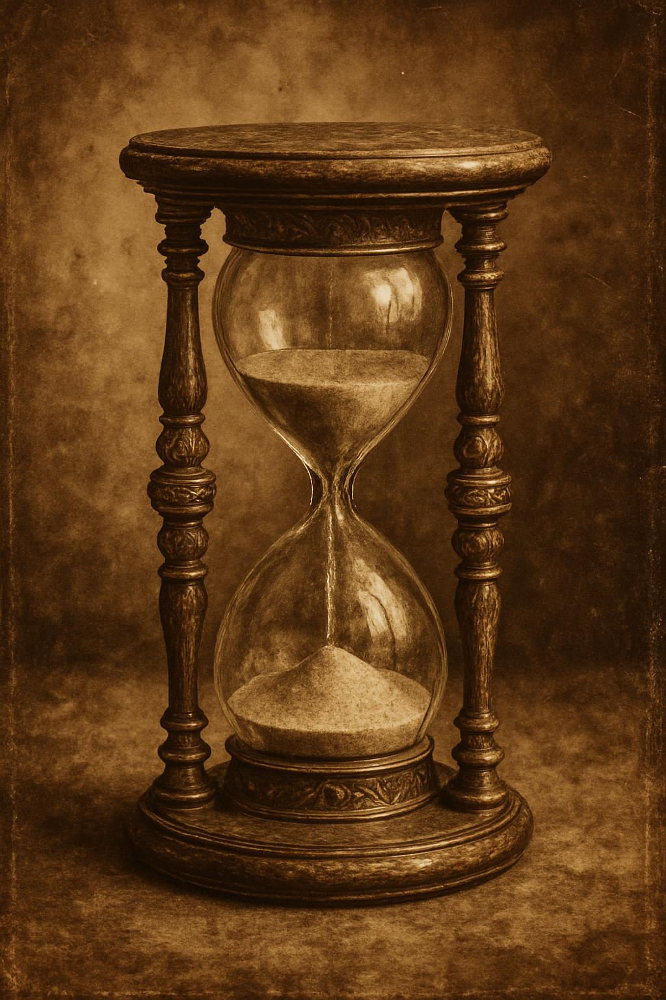
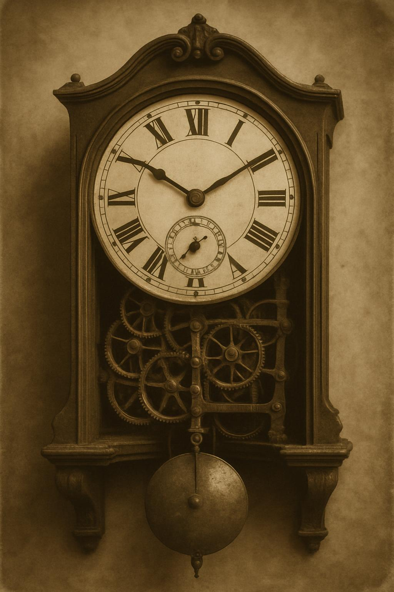
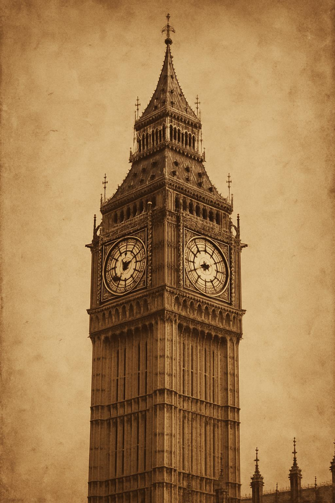
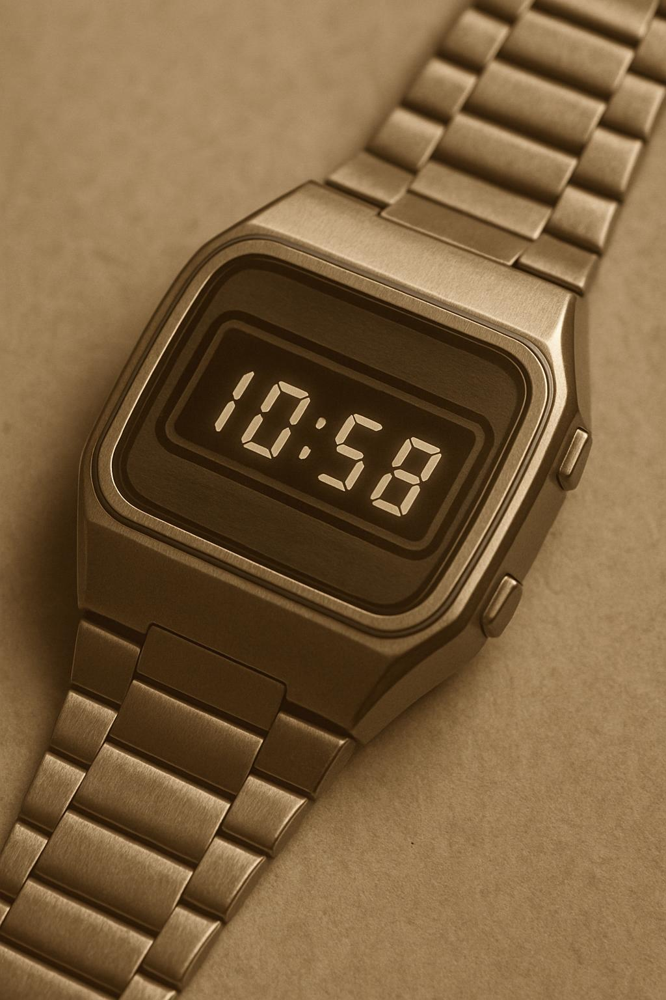
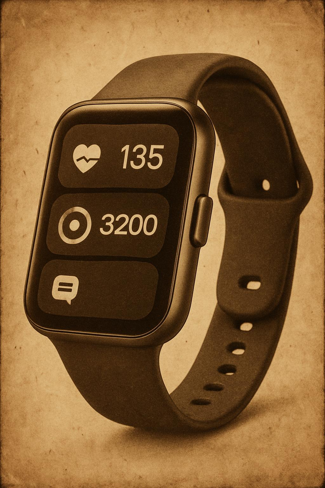

A Evolução dos Relógios Através dos Tempos
Uma jornada fascinante pela história da medição do tempo, desde os primeiros relógios de sol até os modernos smartwatches.
Relógios Antigos

Relógios de Sol
Os relógios de sol foram os primeiros dispositivos criados para medir o tempo. Utilizando a sombra projetada pelo sol, estes instrumentos permitiam dividir o dia em períodos regulares. Os egípcios e babilônios foram pioneiros nesta tecnologia, desenvolvendo gnômons que mostravam a passagem do dia pela sombra de uma vareta fincada no solo.
Apesar de sua simplicidade, os relógios de sol eram surpreendentemente precisos em dias ensolarados, e seu princípio básico continua válido até hoje.
Clepsidras
As clepsidras, ou relógios de água, representaram um avanço significativo na medição do tempo, pois funcionavam independentemente das condições climáticas. Consistiam em recipientes com marcações que mediam o tempo conforme a água escoava de forma controlada.
Utilizados no Egito Antigo e posteriormente aperfeiçoados pelos gregos e romanos, estes dispositivos permitiam medir o tempo mesmo durante a noite ou em dias nublados.


Ampulhetas
Encontradas já no século XVI a.C., as ampulhetas consistiam em dois recipientes conectados, onde a areia escoava de um para o outro, medindo assim intervalos específicos de tempo.
Este modelo foi amplamente utilizado na navegação marítima e em mosteiros medievais para regular os períodos de oração. Sua simplicidade e confiabilidade fizeram com que permanecesse em uso por séculos, sendo ainda hoje um símbolo reconhecível da passagem do tempo.
Relógios Mecânicos
Os primeiros relógios mecânicos surgiram na era cristã, marcando uma revolução na forma de medir o tempo. Acredita-se que o primeiro foi criado em 725 d.C. pelo monge budista chinês Yi Ching.
Inicialmente, estes relógios eram grandes e destinados a torres e edifícios públicos. Com o passar dos séculos, os mecanismos foram se tornando mais precisos e compactos, permitindo o surgimento dos relógios de bolso e, posteriormente, os de pulso.
A introdução do pêndulo no século XVII por Christiaan Huygens revolucionou a precisão dos relógios, reduzindo significativamente a margem de erro na medição do tempo.
Primeiro Relógio Mecânico
Criado pelo monge budista chinês Yi Ching.
Relógios de Torre
Surgem os primeiros relógios mecânicos em torres na Europa.
Relógio de Bolso
Peter Henlein cria o primeiro relógio de bolso portátil.
Relógio de Pêndulo
Christiaan Huygens inventa o relógio de pêndulo.
Relógio de Pulso
Patek Philippe cria um dos primeiros relógios de pulso.
O Relógio de Londres: Big Ben
História e Construção
O Big Ben é na verdade o nome do grande sino instalado na torre noroeste do Palácio de Westminster, sede do Parlamento Britânico em Londres. A torre foi inaugurada em 1859, durante a gestão de Sir Benjamin Hall.
Originalmente chamada de Clock Tower (Torre do Relógio), foi renomeada como Elizabeth Tower em 2012 para marcar o Jubileu de Diamante da Rainha Elizabeth II.
Características
- Estilo arquitetônico neogótico
- 96 metros de altura
- Maior relógio de quatro lados do mundo
- Décima quarta torre de relógio mais alta do mundo
- Cada mostrador tem 7 metros de diâmetro
O Relógio
Os quatro lados do relógio foram projetados por Augustus Pugin. Cada lado é formado por uma estrutura em disco de ferro de 7 metros que contém 312 peças de vidro opaco, como um vitral.
Em cada base do relógio, há uma inscrição em latim: "DOMINE SALVAM FAC REGINAM NOSTRAM VICTORIAM PRIMAM" ("Deus Salve Nossa Rainha Vitória I").
Curiosidades
Em 15 de fevereiro de 1952, o Big Ben tocou 56 vezes, todos os minutos durante o funeral do rei Jorge VI, falecido com 56 anos de idade.
Em 27 de julho de 2012, tocou durante 3 minutos para anunciar a abertura dos Jogos Olímpicos de Verão de 2012.
A torre tem uma pequena inclinação de 0,26 graus para noroeste.
Horário atual em Londres
Relógios Modernos
Relógios de Quartzo
Na década de 1970, a tecnologia de quartzo revolucionou a indústria relojoeira, oferecendo precisão sem precedentes a um custo acessível. Estes relógios utilizam as propriedades piezelétricas do cristal de quartzo para manter o tempo com grande exatidão.
O cristal de quartzo vibra a uma frequência extremamente estável quando estimulado eletricamente, permitindo uma precisão muito superior aos mecanismos puramente mecânicos.
Relógios Digitais
Com o avanço da eletrônica, surgiram os relógios digitais, que substituíram os ponteiros por displays numéricos. Estes modelos se popularizaram rapidamente devido à facilidade de leitura e às múltiplas funções que podiam incorporar.
Os relógios digitais trouxeram recursos como cronômetros, alarmes múltiplos, calendários e até mesmo calculadoras, expandindo significativamente a utilidade dos relógios de pulso.
Smartwatches
No século XXI, os relógios inteligentes ou smartwatches representam a mais recente evolução na medição do tempo. Além de mostrar as horas com precisão atômica (sincronizados via internet), estes dispositivos funcionam como mini-computadores de pulso.
Oferecem funcionalidades como monitoramento de saúde, comunicação, GPS, pagamentos e acesso a aplicativos, transformando o conceito tradicional de relógio em uma ferramenta multifuncional integrada ao ecossistema digital.
O Futuro dos Relógios
A tecnologia continua avançando, e os relógios do futuro provavelmente integrarão ainda mais funcionalidades em designs cada vez mais elegantes e minimalistas. A inteligência artificial, a realidade aumentada e os materiais avançados estão moldando o futuro destes dispositivos que, há milênios, nos ajudam a compreender e organizar nossa relação com o tempo.
Galeria de Relógios Históricos
Relógio de Sol Egípcio
Um dos primeiros dispositivos para medir o tempo, datado de aproximadamente 1500 a.C.
Clepsidra Grega
Relógio de água utilizado na Grécia Antiga para medir o tempo independentemente das condições climáticas.

Relógio de Torre Medieval
Um dos primeiros grandes relógios mecânicos instalados em torres na Europa durante a Idade Média.
Ampulheta Histórica
Exemplo refinado de ampulheta com estrutura ornamentada, utilizada para medir intervalos específicos de tempo.

Big Ben
O icônico relógio de Londres, um dos símbolos mais reconhecíveis do Reino Unido.
Relógio Mecânico
Um exemplo clássico de relógio mecânico com engrenagens e pêndulo visíveis.

Relógio de Quartzo dos Anos 70
Modelo que revolucionou a indústria relojoeira com sua precisão e custo acessível.

Smartwatch Contemporâneo
Exemplo da mais recente evolução dos relógios, combinando precisão com múltiplas funcionalidades digitais.